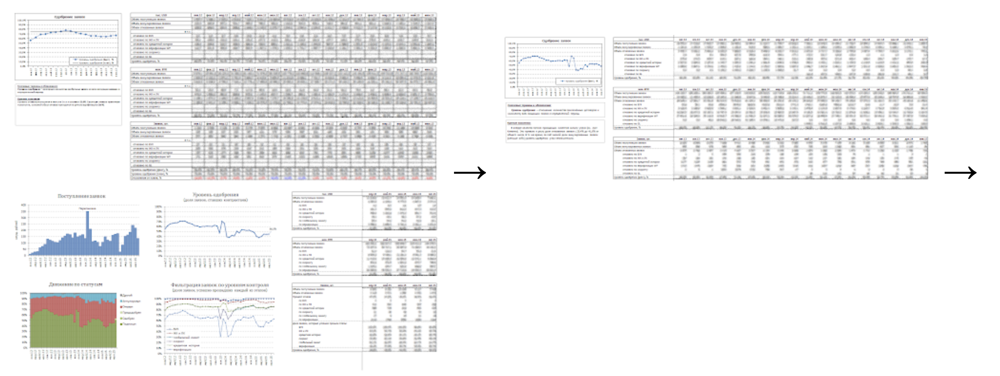

Job for a visual data analyst
To: crew@taucraft.com
Tue, Sep 29, 2015 at 9:59 PM
Good evening!
Мy name is Anton Iokov, and I believe I can be useful to Taucraft. There is no vacancy on crew.taucraft.com that matches my skills, so I will simply tell you a bit about myself, assuming you know better which position would benefit most from my background.
I am currently working on visual data analysis for MTBank.
It all started a couple of years ago when I came across excerpts from Tufte, and it blew my mind. I realized how inefficient much of the analysis was that our bank used to make decisions. Soon I took visualization seriously and, over two iterations, transformed the main risk report issued by our department:
You can find more detail about this and other projects in the attached file.
After the bank’s management board and my fellow analysts welcomed the changes, I began working almost exclusively on visual data analysis and, over a year and a half, created a couple of dozen analytical reports, both exploratory and explanatory.
Today, visualization excites me just as much as it did two years ago, and I want to continue developing in this field.
From what I know about you from Mikhail Dubakov’s articles on Medium, from Natalia Yadrentseva’s talk at Data Talks, and from personal conversations with Yura Razumov, working at Taucraft means interesting projects, an excellent team, and a springboard for growth. I would be happy to contribute to TargetProcess and Taucharts.
My additional upsides include solid English (Upper-Intermediate according to Streamline and UIC English tests), strong mathematical training (I am a fifth-year student at the FAMCS BSU), and a Crystal Owl from the Belarusian “What? Where? When?” TV show.
As for the drawbacks, I lack experience working in IT companies (accordingly, I have not seen Agile, Scrum, or Kanban in action), and my JavaScript skills are not stellar yet (I am working on this).
Sincerely, Anton Iokov